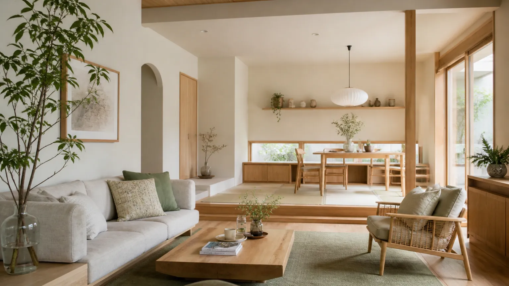

AI apps for everyday living
撮るだけ。
暮らしの困りごとを、
AIが見立てます。
部屋・服・掃除・洗濯。写真を撮るだけで、見立てと手順、使う道具まで分かります。4つのアプリはどれも、スマホのブラウザですぐ使えます。
- 登録不要
- 無料
- アプリのインストール不要
使い方は、3ステップ
- 01撮る
- 02AIが見立てる
-
03手順と道具が
分かる

AI apps for everyday living
部屋・服・掃除・洗濯。写真を撮るだけで、見立てと手順、使う道具まで分かります。4つのアプリはどれも、スマホのブラウザですぐ使えます。
4つのアプリは、それぞれの画面の下から行き来できます。